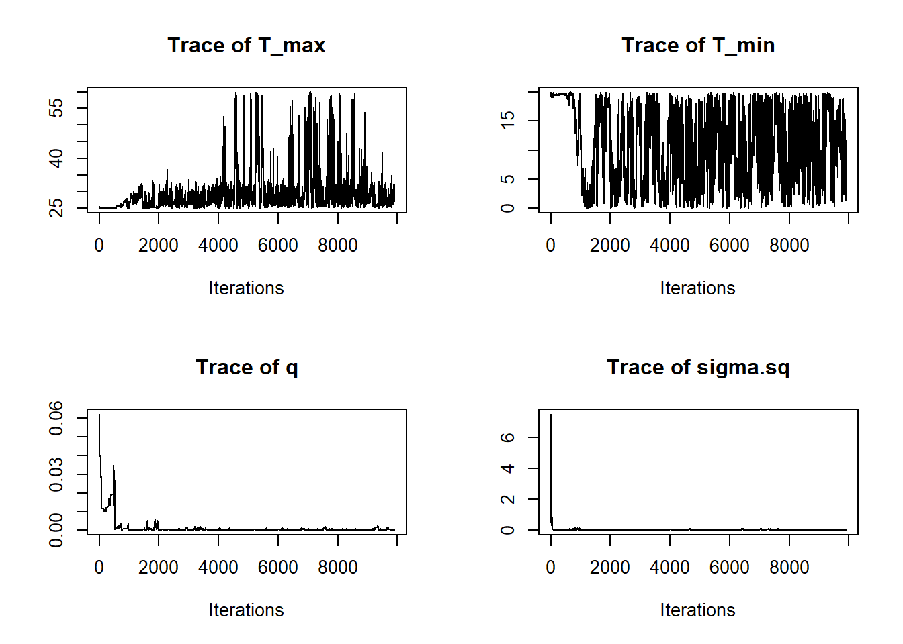
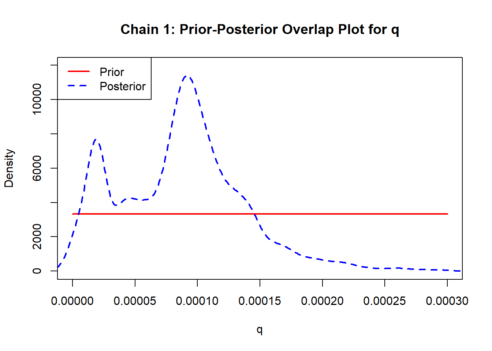
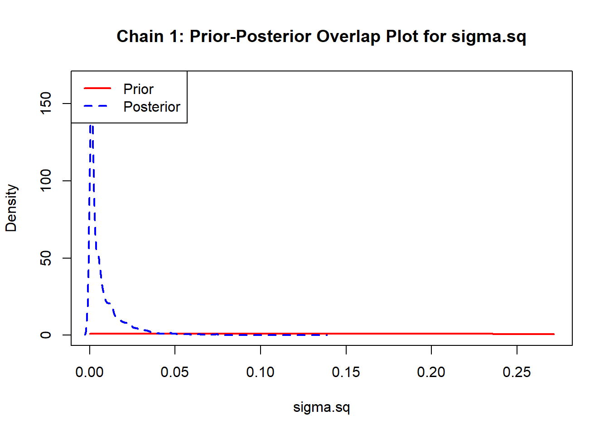

On this page, we will show how to use bayesTPC to fit basic TPCs. We assume familiarity with Bayesian model fitting and MCMCs for the sake of this demonstration.
Loading required packages
library(nimble)
nimble version 1.0.1 is loaded.
For more information on NIMBLE and a User Manual,
please visit https://R-nimble.org.
Note for advanced users who have written their own MCMC samplers:
As of version 0.13.0, NIMBLE's protocol for handling posterior
predictive nodes has changed in a way that could affect user-defined
samplers in some situations. Please see Section 15.5.1 of the User Manual.
Attaching package: 'nimble'
The following object is masked from 'package:stats':
simulate
library(bayesTPC)
Exploring and formatting data
This dataset comes from the paper Effects of High and Fluctuating Temperatures on Myzus persicae by Davis et. al. (10.1093/ee/35.6.1461). We can retrieve the data from the Vectraits database using the API built into bayesTPC.
Using Vectraits
data <-get_dataset(107)
Thanks to Vectraits’ standardized column naming, we can learn about our data through subsetting columns.
# Traits measuredunique(data$OriginalTraitName)
[1] "development rate"
# Speciesunique(data$Interactor1)
[1] "Myzus persicae"
# Does the data come from the lab or the field?unique(data$LabField)
[1] "laboratory"
# life stage of organism measuredunique(data$Interactor1Stage)
[1] "juvenile"
# Unit of dataunique(data$OriginalTraitUnit)
[1] "days-1"
From our exploration, we now know that we are fitting development rate in days for juvenile Myzus persicae measured in the lab. A full list of all possible data features and their definitions is available on the Vectraits website.
Observations
To access the observations and their respective temperatures, we look at these columns:
head(data$OriginalTraitValue)
[1] 0.059 0.128 0.129 0.150 0.162 0.156
head(data$Interactor1Temp)
[1] 13.0 18.9 20.1 22.9 27.1 29.9
To fit using bayesTPC, we have to format our traits and temperatures into a named list.
To see the exact specification of a particular model, we can use
get_default_model_specification("briere")
bayesTPC Model Specification of Type:
briere
Model Formula:
m[i] <- ( q * Temp * (Temp - T_min) * sqrt((T_max > Temp) * abs(T_max - Temp)) * (T_max > Temp) * (Temp > T_min) )
Model Distribution:
Trait[i] ~ T(dnorm(mean = m[i], tau = 1/sigma.sq), 0, )
Model Parameters and Priors:
q ~ dunif(0, 1)
T_max ~ dunif(25, 60)
T_min ~ dunif(0, 24)
Prior for Variance:
sigma.sq ~ dexp(1)
Here we can see the exact model formula, along with what distribution parameter is being fit (i.e. mean for a normal distribution, success rate for a binomial distribution, etc.). The default priors for all model parameters are also shown. To see the individual parts of each specification, we can use get_formula(), get_default_priors(), and get_default_constants().
Now that we know what we have available, let’s fit our data to the briere model.
Fitting
Default Models
If the default model priors are satisfactory, fitting in bayesTPC can be done simply using b_TPC().
set.seed(1)fit1 <-b_TPC(data = data_list, model ="briere")
Printing our fit object returns a simple summary of the MCMC results. We can use summary() to see a more detailed analysis.
summary(fit1)
bayesTPC MCMC of Type:
briere
Formula:
m[i] <- ( q * Temp * (Temp - T_min) * sqrt((T_max > Temp) * abs(T_max - Temp)) * (T_max > Temp) * (Temp > T_min) )
Distribution:
Trait[i] ~ T(dnorm(mean = m[i], tau = 1/sigma.sq), 0, )
Priors:
q ~ dunif(0, 1)
T_max ~ dunif(25, 60)
T_min ~ dunif(0, 24)
sigma.sq ~ dexp(1)
Max. A Post. Parameters:
T_max T_min q sigma.sq log_prob
32.6015 11.8406 0.0002 0.0007 8.5465
MCMC Results:
Iterations = 1:10000
Thinning interval = 1
Number of chains = 1
Sample size per chain = 10000
1. Empirical mean and standard deviation for each variable,
plus standard error of the mean:
Mean SD Naive SE Time-series SE
T_max 26.54613 1.8385 0.018385 0.24255
T_min 22.25734 3.5641 0.035641 0.73195
q 0.43239 0.3266 0.003266 0.01901
sigma.sq 0.05418 0.3599 0.003599 0.02400
2. Quantiles for each variable:
2.5% 25% 50% 75% 97.5%
T_max 2.505e+01 25.54139 26.14070 26.75010 32.6971
T_min 9.915e+00 23.01179 23.34753 23.68103 23.9732
q 2.026e-04 0.11553 0.41181 0.72869 0.9743
sigma.sq 2.931e-03 0.01619 0.02495 0.04002 0.1254
Something doesn’t look quite right. Our MAP estimate is the sample with the highest posterior probability, but it isn’t even close to the mean and median of each parameter. This can suggest we haven’t converged to the best fit. Thankfully, bayesTPC offers diagnostics to measure whether our model fits our data.
Diagnostics
The simplest diagnostic we can perform is to just plot our model.
plot(fit1)
Oh dear. Well, at least we have a better idea of what went wrong. Our priors for the minimum and maximum temperatures were far too lenient. For example, when we specified that the prior for T_min was dunif(0,24), we told bayesTPC that all values between 0 and 24 degrees Celcius were equally reasonable a priori. Looking at the data, this is not a reasonable assumption, as the trait value was relatively not close to zero at temperatures greater than 15. To confirm what went wrong, we can look at the traceplots for each parameter.
par(mfrow =c(2,2))traceplot(fit1, burn =100)

If our model converged, we would see the parameters not move too much after an initial burn in period. This means the traces should look like a “fuzzy caterpillar”. Near the 8000th iteration, the MCMC goes to a completely different solution.
Modifying the fitting routine
Let’s change our priors and set some reasonable initial values.
That looks a lot better! We have successfully fit a thermal performance curve using bayesTPC.
More plots
Now let’s explore more tools we can use to analyze our fits. First, let’s look at how the distribution of our parameters has changed using ppo_plot().
ppo_plot(fit2)


We can also look at the pairwise posterior joint distributions of our parameters using bayesTPC_ipairs(), which is a wrapper of IDPmisc::ipairs().
bayesTPC_ipairs(fit2)
Here, we can see the relationships between our different parameters. Observe that the minimum temperature and the scale parameter are strongly positively correlated.
Creating our own models
What if we wanted to fit a model not included in bayesTPC?
Let’s look at how the package defines the briere model.
get_default_model_specification("briere")
bayesTPC Model Specification of Type:
briere
Model Formula:
m[i] <- ( q * Temp * (Temp - T_min) * sqrt((T_max > Temp) * abs(T_max - Temp)) * (T_max > Temp) * (Temp > T_min) )
Model Distribution:
Trait[i] ~ T(dnorm(mean = m[i], tau = 1/sigma.sq), 0, )
Model Parameters and Priors:
q ~ dunif(0, 1)
T_max ~ dunif(25, 60)
T_min ~ dunif(0, 24)
Prior for Variance:
sigma.sq ~ dexp(1)
For our model, we will choose an alternate briere formula, changing the square root to a cube root.
\[
f(T) = \begin{cases} 0 &\mbox{if } T \leq T_0 \\
q T (T-T_0) \sqrt[3]{T_m-T} & \mbox{if } T_0 < T <T_m \\
0 &\mbox{if } T \geq T_m \end{cases}
\]
Since we have no constants we need to add, that’s all the information we need! We can use specify_normal_model() to create a model object we can train.
my_briere <-specify_normal_model("my_briere", #model nameparameters = my_briere_priors, #names are parameters, values are priorsformula = my_briere_formula )
Model type 'my_briere' can now be accessed using other bayesTPC functions. Restart R to reset back to defaults.
We can also pass the model object in, instead of just the name. For those who’ve created MCMC’s using the BUGS language, configure_model() returns the BUGS model that will be trained.
coda lets us pull the Watanabe–Akaike information criterion (WAIC) from the models we’ve fit.
fit1$mcmc$getWAIC()
[Warning] There are 6 individual pWAIC values that are greater than 0.4. This may indicate that the WAIC estimate is unstable (Vehtari et al., 2017), at least in cases without grouping of data nodes or multivariate data nodes.
nimbleList object of type waicNimbleList
Field "WAIC":
[1] 11207269
Field "lppd":
[1] 8.694661
Field "pWAIC":
[1] 5603643
fit2$mcmc$getWAIC()
[Warning] There are 7 individual pWAIC values that are greater than 0.4. This may indicate that the WAIC estimate is unstable (Vehtari et al., 2017), at least in cases without grouping of data nodes or multivariate data nodes.
nimbleList object of type waicNimbleList
Field "WAIC":
[1] -33.32241
Field "lppd":
[1] 23.33245
Field "pWAIC":
[1] 6.671245
fit3$mcmc$getWAIC()
[Warning] There are 7 individual pWAIC values that are greater than 0.4. This may indicate that the WAIC estimate is unstable (Vehtari et al., 2017), at least in cases without grouping of data nodes or multivariate data nodes.
nimbleList object of type waicNimbleList
Field "WAIC":
[1] -30.26616
Field "lppd":
[1] 20.05759
Field "pWAIC":
[1] 4.924511
It looks like the default briere model performed the best out of all three fits.
Conclusion
This introduction has showcased the basic functionality of bayesTPC and shows how to fit a basic thermal performance curve. Future examples will delve into fitting different kinds of models, best practices for fitting Bayesian TPCs, and more advanced features that bayesTPC provides. We hope you find it as useful and enjoyable to work with as we do and good luck on your model fitting adventures!